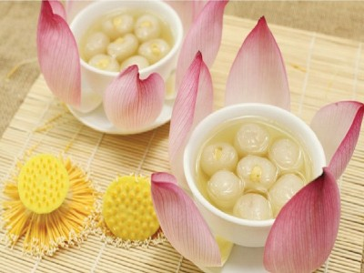

|  |
Food's name: Longan lotus seed tea▸ Ingredients:
▸ Time to prepare: 45 minutes ▸ Approx quantity: 2 small bowls |
▸ Detailed recipe:
- Fresh lotus seeds should be washed, removed from the heart, if eaten bitter, the heart is also very good. If using dry lotus, soak it in water to bloom
- Fresh longan peeled, removed seeds, remember to not tear the pulp, if the longan is dry, soak it in water to bloom.
- Put lotus in a pot and simmer until soft. When the lotus is soft, add alum sugar, season with water to taste, simmer for another 5-10 minutes for the lotus to ponder
the alum sugar, and then turn off the pot.
- Use a small spoon to pick up the lotus and put it in the pulp, then drop it into the boiling water and bring it to a boil, then turn off the heat.
- Ladle the tea into a bowl to cool and eat very well.
▸ Calories and related information: